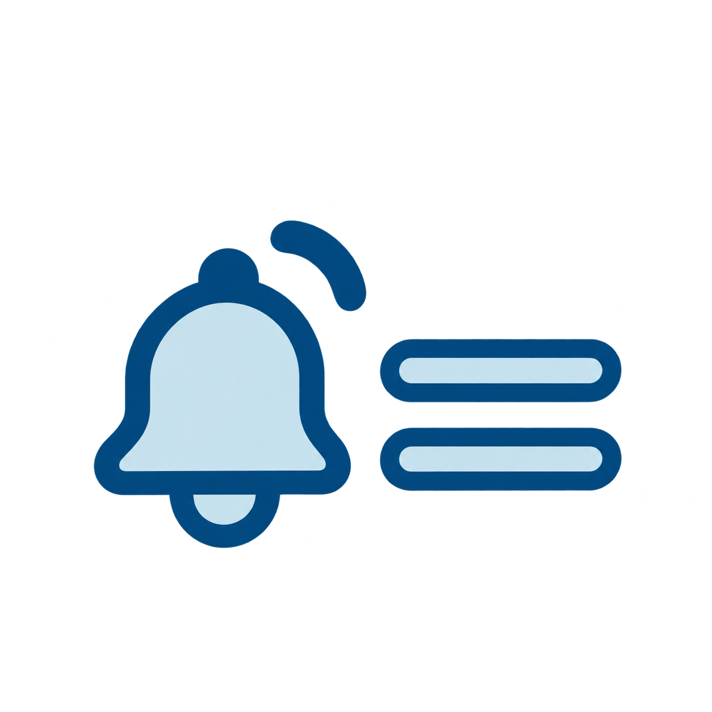
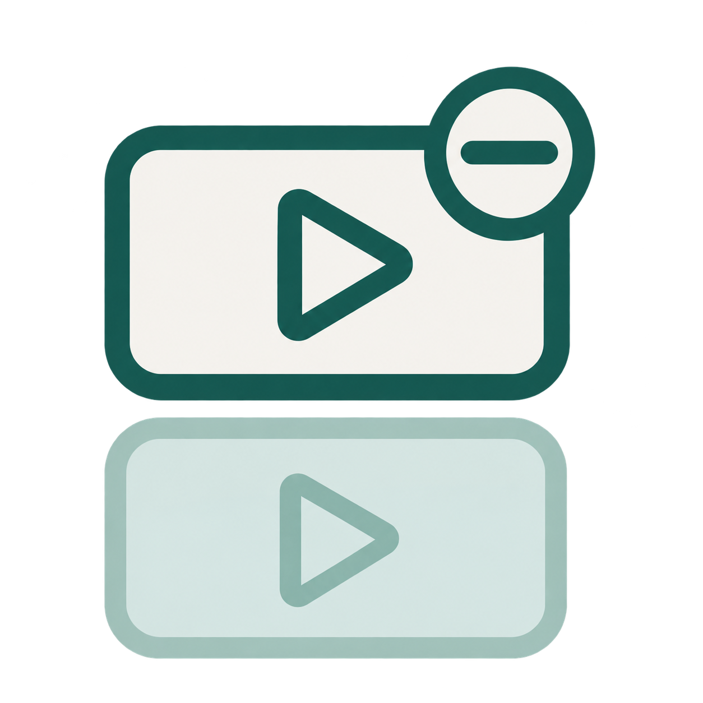

Mit dieser Seite stellst du YouTube sicher ein. Mach die Schritte an deinem eigenen Handy mit. Du kannst dir jeden Teil vorlesen lassen. Tippe dafür auf „Vorlesen“.
Mit dieser Seite stellst du YouTube sicher ein. Mach die Schritte an deinem eigenen Handy mit. Du kannst dir jeden Teil vorlesen lassen. Tippe dafür auf „Vorlesen“.

So findest du die Einstellungen
Diesen Weg brauchst du für die nächsten Schritte. Merke ihn dir gut.
- Öffne die App YouTube.
- Tippe oben rechts auf dein Profilbild.
- Tippe auf „Einstellungen“.
Der Weg ist auf dem iPhone und bei Android fast gleich.
Autoplay ausschalten
Autoplay startet immer das nächste Video von allein. Dann schaust du oft länger, als du willst. Du kannst das ausschalten.
- Geh zu den Einstellungen.
- Tippe auf „Autoplay“.
- Schalte „Autoplay“ aus.
Dann entscheidest du selbst, wann das nächste Video kommt.
 Geschafft!
Geschafft!
Eingeschränkter Modus einschalten
Der eingeschränkte Modus blendet Videos aus, die nicht für alle passen. Das macht YouTube ruhiger.
- Geh zu den Einstellungen.
- Tippe auf „Allgemein“.
- Schalte „Eingeschränkter Modus“ ein.
Nicht jedes Video wird so gefiltert. Aber viele.
Geschafft!
Wiedergabe-Verlauf pausieren
YouTube merkt sich, was du schaust. Danach schlägt es ähnliche Videos vor. Du kannst das anhalten.
- Geh zu den Einstellungen.
- Tippe auf „Verlauf und Datenschutz“.
- Tippe auf „Wiedergabeverlauf pausieren“.
- Bestätige.
So bekommst du weniger von allein vorgeschlagen.
Geschafft!

Weniger Benachrichtigungen
YouTube schickt oft Meldungen. Das kann stören. Du kannst weniger davon bekommen.
- Geh zu den Einstellungen.
- Tippe auf „Benachrichtigungen“.
- Schalte aus, was du nicht brauchst.
Zum Beispiel „Empfohlene Videos“ kannst du ausschalten.
Geschafft!

Empfehlungen steuern
Du kannst YouTube sagen, was du nicht sehen willst. Dann kommt so etwas seltener.
- Such ein Video, das du nicht magst.
- Tippe neben dem Video auf die drei Punkte.
- Tippe auf „Nicht interessiert“.
Du kannst auch „Kanal nicht mehr empfehlen“ wählen.
Geschafft!

Einen Kanal nicht mehr sehen
Wenn ein Kanal dich stört, kannst du ihn ausblenden. Dann siehst du seine Videos nicht mehr.
- Geh auf den Kanal.
- Tippe oben rechts auf die drei Punkte.
- Tippe auf „Nutzer blockieren“.
Du kannst das später wieder rückgängig machen.
Geschafft!

Ein Video oder einen Kommentar melden
Wenn etwas gemein oder gefährlich ist, kannst du es melden. YouTube schaut sich das an.
- Tippe neben dem Video oder Kommentar auf die drei Punkte.
- Tippe auf „Melden“.
- Wähle einen Grund.
- Folge den Schritten.
Bei etwas Schlimmem: sag auch einer Person Bescheid, der du vertraust.
Geschafft!